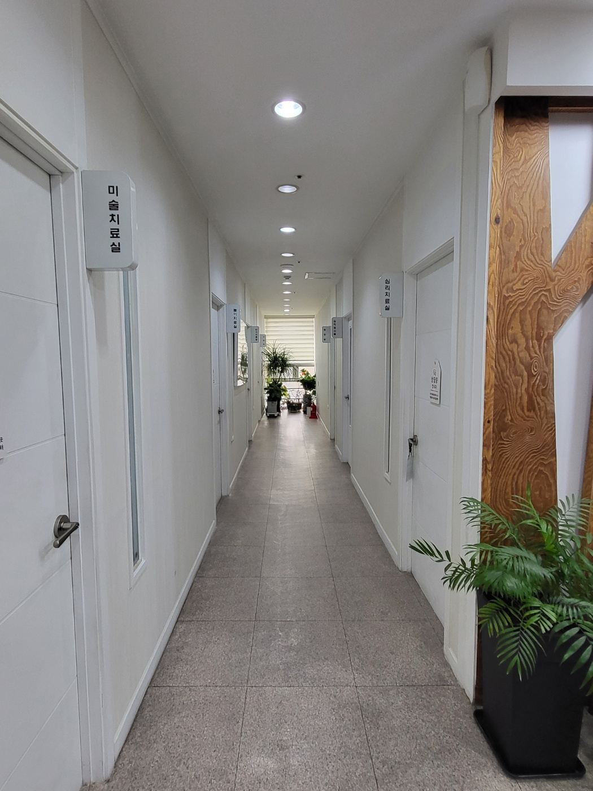
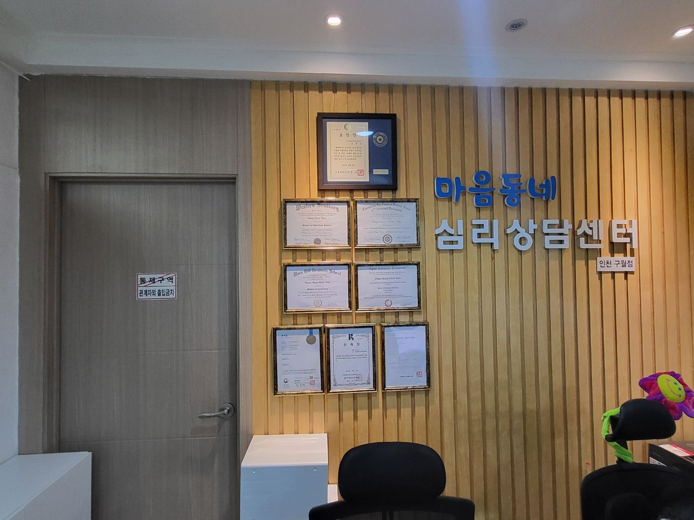
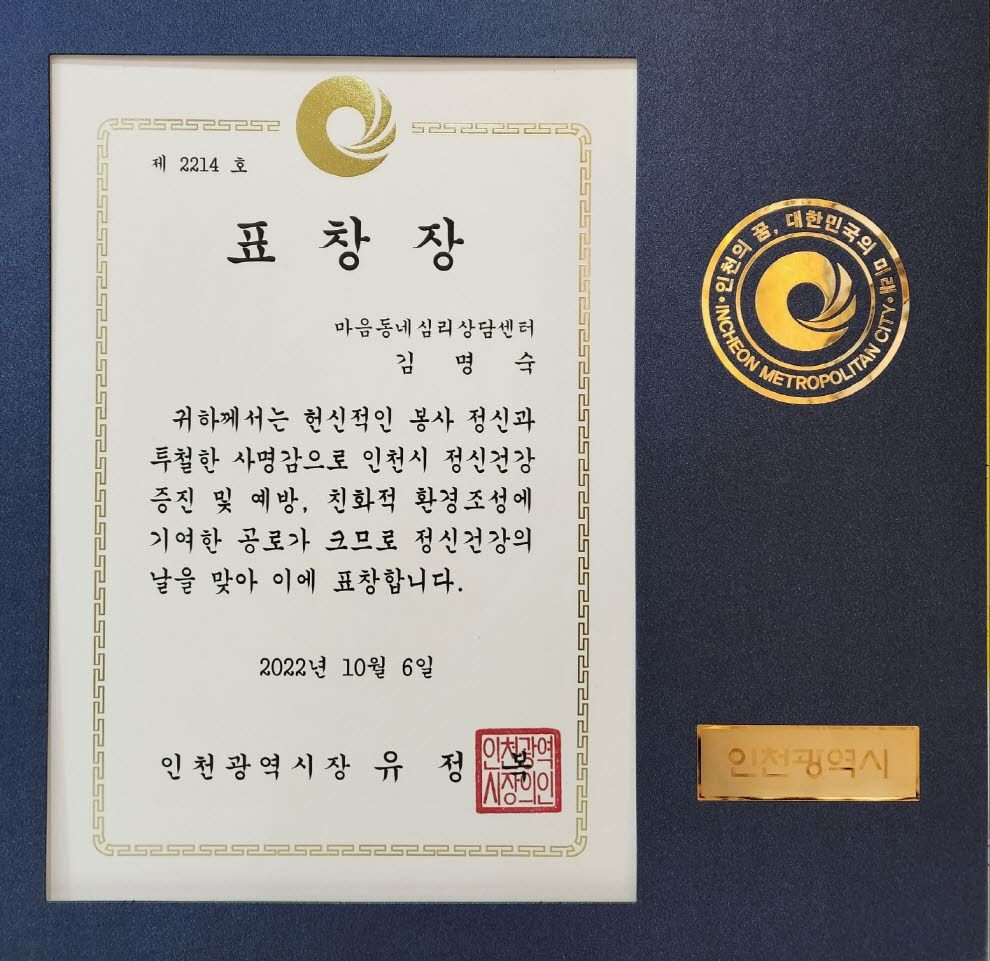
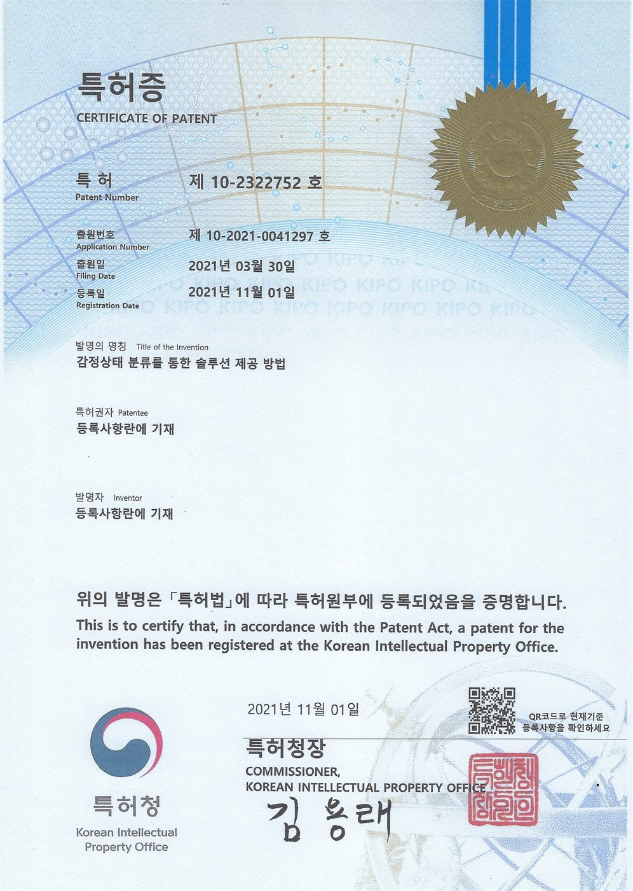

마음동네 이야기 · 인천 구월동
마음이 힘들 때,
마음까지 다치고 돌아가는 일은 없도록
마음동네심리상담센터가 서울 강남 본점에 이어 2019년 인천 구월동 길병원 옆에 문을 연 뒤로 지켜 온 약속입니다. 그리고 하나 더 — 따뜻한 공감만큼 중요한 것은 전문적이고 검증된 심리상담이라는 것.

심리상담을 받아볼까 고민하면서 이런 생각을 해 보신 적 있으신가요?
- ‘내 이야기를 제대로 들어 줄까?’
- ‘상담사가 내 마음을 이해할 수 있을까?’
- ‘정말 도움이 되는 상담일까?’
마음이 힘들어서 상담을 고민하는 것 자체도 쉽지 않은 일입니다. 어렵게 용기를 내어 상담실을 찾아왔는데 오히려 마음이 불편해진다면 얼마나 속상할까요. 마음동네는 바로 이 질문에서 출발했습니다.
하나
화려한 광고보다 상담의 본질에 집중했습니다
솔직히 말씀드리면 마음동네는 블로그나 온라인 홍보에 적극적인 센터는 아니었습니다. 방송·신문 기사와 유튜브 협업 제안처럼 센터를 더 알릴 기회도 있었지만, 그때마다 저희가 선택한 것은 상담실에서 만나는 한 사람 한 사람에게 집중하는 일이었습니다.
내담자의 이야기를 충분히 듣고, 마음의 어려움을 함께 이해하고, 더 나은 상담을 위해 연구하고 공부하는 것. 그렇게 하루하루 상담의 질을 높이는 데 집중하다 보니 정작 저희가 어떤 일을 하는지 알리는 데에는 조금 소홀했습니다. 이제는 마음동네가 어떤 곳인지, 어떤 전문가들이 함께하는지 조금 더 솔직하게 이야기해 보려고 합니다.


둘
근거기반 심리상담을 지향합니다
공감과 경청은 중요합니다. 하지만 마음의 어려움을 이해하고 변화로 이어 가려면 전문 지식과 임상 경험, 검증된 상담 접근이 함께 필요합니다.
인지행동치료(CBT)
생각·감정·행동의 연결을 이해하고, 도움이 되지 않는 사고와 행동 패턴을 바꿔 갑니다.
변증법적 행동치료(DBT)
감정 조절, 대인관계, 스트레스 대처 능력을 기릅니다.
정신역동·정신분석적 접근
반복되는 관계와 감정의 패턴, 마음 깊은 곳의 갈등을 함께 이해합니다.
마음챙김 기반 접근
지금 이 순간의 감정과 생각을 알아차리고 받아들이는 연습을 합니다.
트라우마 상담 접근
EMDR, 브레인스포팅, SE(신체 경험) 등 트라우마 경험을 다루는 방법을 활용합니다.
균형심리치료
개인의 심리적 특성과 어려움을 종합적으로 이해하는 마음동네의 접근입니다. 자세히
중요한 것은 어떤 기법이 더 유명한지가 아닙니다. 나에게 지금 필요한 상담이 무엇인지 이해하고 그에 맞는 접근을 선택하는 것입니다. 마음동네는 한 가지 방법을 모든 사람에게 적용하기보다 개인의 특성과 상담 목표를 고려한 상담을 지향합니다.
셋
마음의 어려움은 생각보다 다양한 모습으로 찾아옵니다
우울이나 불안처럼 익숙한 어려움부터 가족·부부·자녀와의 관계에서 생기는 문제까지. 마음동네는 다음 영역의 심리상담과 심리평가를 제공합니다.
넷
상담의 질은 상담사의 전문성에서 시작됩니다
심리상담을 선택할 때 상담사의 자격과 경력을 확인하는 것은 매우 중요합니다. 마음동네에는 석·박사 과정을 거치고 오랜 임상·상담 경험을 쌓은 전문가들이 함께하고 있습니다. 상담진은 전문 분야에 따라 다음 자격을 보유하고 있습니다.
특히 임상심리전문가 3명이 심리평가를 맡고 있습니다. 심리평가는 검사지를 작성하고 점수를 확인하는 데서 끝나지 않습니다. 인지적 특성, 정서 상태, 성격과 심리적 기능을 종합적으로 이해해 상담의 방향을 정하는 중요한 자료가 됩니다.

다섯
전문성을 위한 노력은 계속됩니다
상담을 많이 하는 것보다 중요한 것은, 어떻게 하면 더 정확하게 이해하고 더 적절하게 도울 수 있을지 끊임없이 고민하는 것입니다. 연구와 임상 활동, 수상, 특허, 저서는 그 노력의 과정입니다.
수상
- 2022년 정신건강의 날 인천광역시장 표창 — 인천시 정신건강 증진과 예방에 기여 (김명숙 센터장)
- 2019년 대한민국아름다운경영인 국회교육상임위원장상 대상 (남상철 원장)
특허
- 감정상태 분류를 통한 솔루션 제공 방법 — 제10-2322752호 (2021.11.1)
- 균형심리이론 기반 마음작업 서비스 제공 시스템 — 제10-2500073호 (2023.2.10)
연구·개발과 저서


마음동네는 지역 기관들과 업무협약을 맺으며 지역사회의 심리 지원 환경을 넓혀 가고 있습니다.
여섯
AI가 많은 것을 대신하는 시대,
사람의 마음만큼은 다 담을 수 없습니다
이제는 심리적인 고민도 AI에게 털어놓을 수 있는 시대가 되었습니다. 그렇지만 누군가의 마음을 이해하는 일은 정보를 분석하는 것만으로 충분하지 않습니다. 말로 다 표현하지 못한 감정, 오랜 시간 쌓여 온 상처, 관계 속에서 반복되는 어려움 — 그 사람만의 삶과 맥락을 이해하고 존중하는 과정이 필요합니다.
마음동네는 전문 지식과 연구를 소중히 여기면서도, 무엇보다 상담실을 찾아오시는 한 사람 한 사람의 마음을 소중히 대하고 싶습니다. 처음 문을 열었을 때의 약속처럼요.
마음이 아파서 찾아오신 분들이
적어도 마음 아프게 돌아가시는 일은 없도록.
인천 구월동에서 심리상담을 고민하고 계신다면 마음동네를 기억해 주세요.
여러분의 마음을 소중히 여기겠습니다.
마음동네심리상담센터 드림